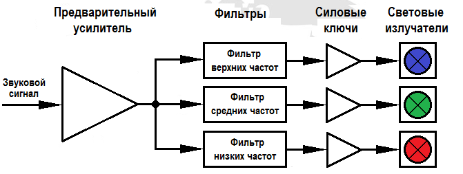
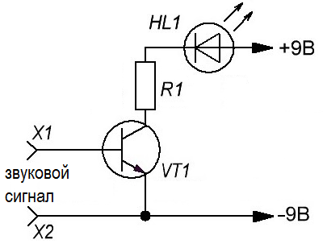
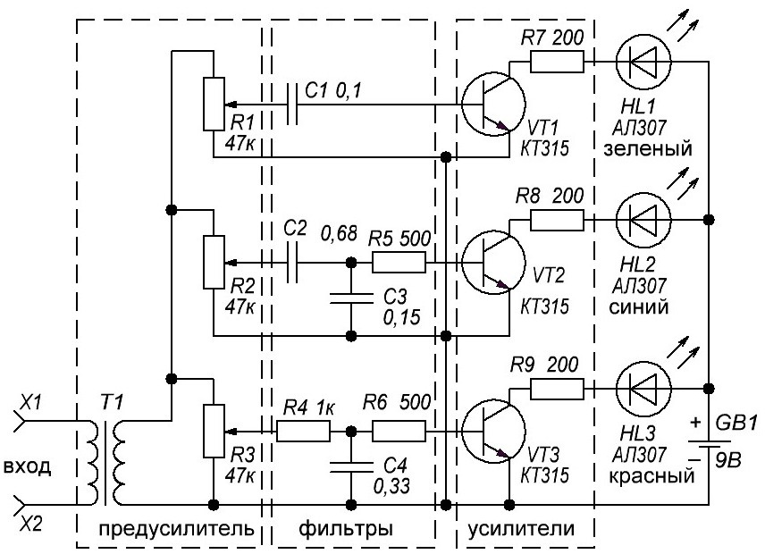
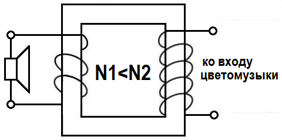
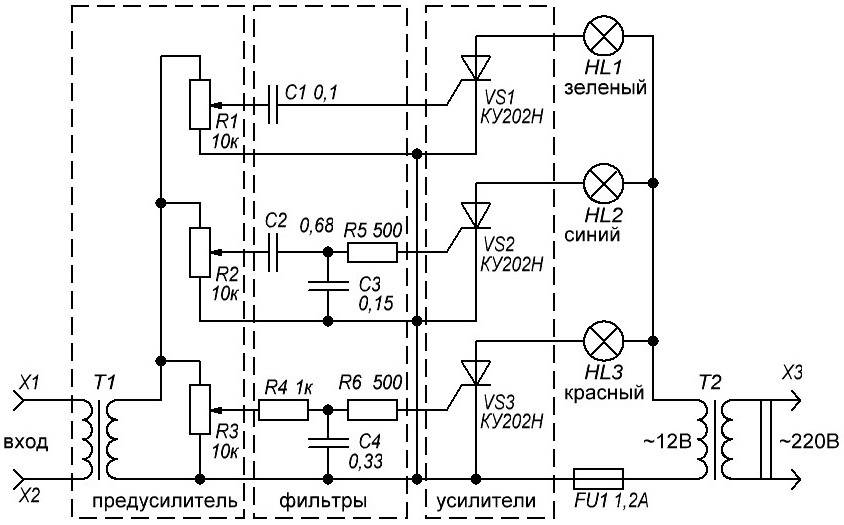
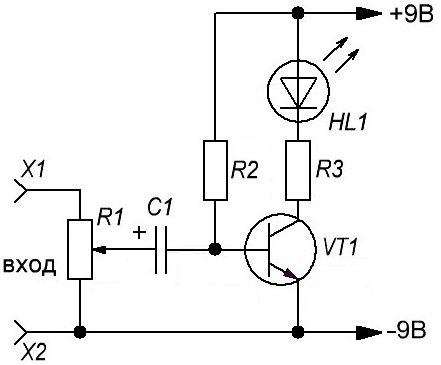
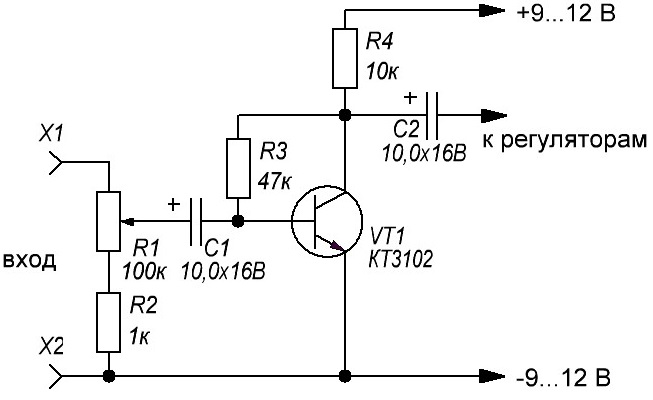
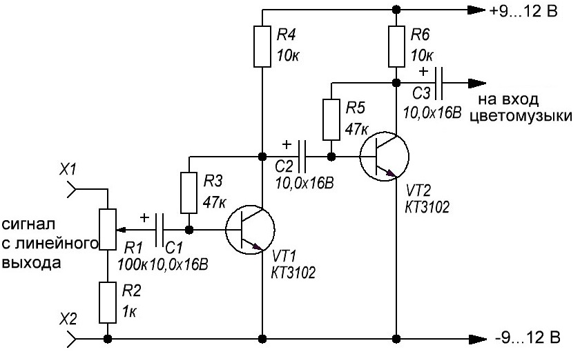
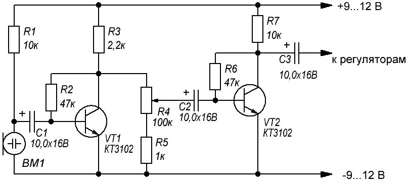

Цветомузыка
Цветомузыка - это создание визуальных эффектов, изменяющихся в такт музыке. Цветомузыкальная установка позволяет получать цветные вспышки в такт с исполняемой мелодией.
В основе цветомузыкальных установок, используется способ частотного преобразования музыки и его передачи, посредством отдельных каналов, для управления источниками света. На рис. 1 представлена структурная схема трехканальной цветомузыкальной установки(рис. 1).

Для создания цветовых эффектов используются, как правило, синий, зелёный и красный цвета. Смешиваясь в различных комбинациях, с разной продолжительностью, они способны создать поразительную атмосферу.
Для разделения сигнал на низкие, средние и высокие чистоты в простых устройствах применяются LC- и RC-фильтры. Они пропускают только определённые частоты, и светоизлучатели будут мигать только под определённые звуки.
Фильтры устанавливаются на следующие частотные диапазоны:
- до 300 Гц - фильтр низких частот, красный цвет;
- 250-2500 Гц - фильтр средних, зелёный;
- выше 2000 Гц - фильтр высоких частот, цвет синий.
Деление на частоты, проводится с небольшим перекрытием, это необходимо, для получения различных цветовых оттенков, при работе устройства.
Выбор цвета в схеме цветомузыки не принципиален. При желании можно использовать светоизлучатели разных цветов на своё усмотрение, менять местами и экспериментировать. Различные частотные колебания в сочетании с применением нестандартного цветового решения, могут существенно повлиять на качество результата.
Для простой цветомузыки можно собрать схему из транзистора, светодиода, резистора и источника питания 9 В (рис. 2). Резистор R1 необходим для ограничения тока светодиода.

Таблица 1
| Обозначение | Тип | Значение | Количество | Примечание |
|---|---|---|---|---|
| VT1 | Биполярный транзистор | КТ315 | 1 | КТ3102 |
| R1 | Резистор | 1 кОм | 1 | |
| VD1 | Светодиод | АЛ307АМ | 1 | |
| GB1 | Источник питания | 9В | 1 | "Крона" |
Подключим собранную схему к источнику звука и подадим. Светодиод начинает мигать в ритм музыки. Но мигает под уровень громкости.
На рис. 3 приведена схема трехканальной цветомузыкальной приставки на светодиодах. Она состоит из трёх каналов и предусилителя.

Таблица 2
| Обозначение | Тип | Номинал | Количество | Примечание |
|---|---|---|---|---|
| C1 | Конденсатор | 0,1 мкФ | 1 | |
| C2 | Конденсатор | 0,68 мкФ | 1 | |
| C3 | Конденсатор | 0,15 мкФ | 1 | |
| C4 | Конденсатор | 0,33 мкФ | 1 | |
| GB1 | Источник питания | 9В | 1 | "Крона" |
| HL1-HL3 | Светодиод | АЛ307 | 3 | |
| R1-R3 | Переменный резистор | 47 кОм | 3 | |
| R4 | Резистор | 1 кОм | 1 | |
| R5, R6 | Резистор | 500 Ом | 2 | |
| R7-R9 | Резистор | 200 Ом | 3 | |
| T1 | Трансформатор | 1 | повышающий | |
| VT1-VT3 | Биполярный транзистор | КТ315 | 3 | КТ3102АМ |
Звук подаётся на трансформатор, который нужен для усиления звука и гальванической развязки. Можно использоватьсетевой малогабаритный трансформатор. В этом случае трансформатор используется как повышающий. Обмотка трансформатора с меньшим количеством витков подключается к источнику звука, например параллельно динамику, усилитель при этом должен выдавать мощность как минимум 3-5 Вт. Обмотка с большим количеством витков подключается ко входу цветомузыки (рис. 4).

Резисторами R1-R3 регулируется уровень сигнала на каналах. Далее идут фильтры, каждый из которых настроен на свою полосу пропускания частот. Низкочастотный - пропускает сигналы частотой до 300Гц на красный светодиод, среднечастотный - 300-6000 Гц на синий, высокочастотный – от 6000 Гц зелёный. Транзисторы подойдут любые, структуры n-p-n с коэффициентом передачи тока не менее 50.
Если использовать в схеме не отдельные светодиоды, а светодиодную ленту, то в схеме следует убрать токоограничивающие резисторы R1, R2, R3. Если используется RGB-лента или RGB-светодиод, то они должны быть выполнены с общим анодом. Если планируется подключать светодиодные ленты большой длины, то для управления лентой следует применить мощные транзисторы, установленные на радиаторы.
Так как светодиодные ленты рассчитаны на питание 12 В, для питания схемы следует использовать стабилизированный источник питания 12 В.
Для увеличения яркости можно использовать лампы накаливания на 12 В. Для этого в предыдущей схеме транзисторы меняем на тиристоры и питаем устройство от трансформатора (рис. 5).

Таблица 3
| Обозначение | Тип | Номинал | Количество | Примечание |
|---|---|---|---|---|
| C1 | Конденсатор | 0,1 мкФ | 1 | |
| C2 | Конденсатор | 0,68 мкФ | 1 | |
| C3 | Конденсатор | 0,15 мкФ | 1 | |
| C4 | Конденсатор | 0,33 мкФ | 1 | |
| HL1-HL3 | Лампочка накаливания | 12 В | 3 | |
| R1-R3 | Переменный резистор | 47 кОм | 3 | |
| R4 | Резистор | 1 кОм | 1 | |
| R5, R6 | Резистор | 500 Ом | 2 | |
| T1 | Трансформатор | 1 | повышающий, разделительный | |
| T2 | Трансформатор | 220В/12В | 1 | |
| VS1-VS3 | Тринистор | КУ202Н | 3 |
Тиристор – управляемый диод, позволяющий управлять мощной нагрузкой с помощью слабых сигналов. При прохождении через него постоянного тока он остаётся в открытом состоянии даже без управляющего сигнала. Для данной схемы подходят практически любые тиристоры, рассчитанные под ток автомобильных ламп на 12 В.
Трансформатор должен отдавать достаточный ток (1,5-5 А) в зависимости от ламп.
При использовании осветительных ламп на 220 В, сетевой трансформатор не понадобится. Звуковой трансформатор необходим для защиты источника звука. При этом всё должно быть тщательно изолировано и размещено в надёжном корпусе.
Фоновая подсветка (рис. 7) работает обратно основным каналам: при отсутствии звука светодиод горит постоянно, подаётся звук – светодиод гаснет. Можно сделать один общий фоновый канал или несколько с отдельными звуковыми фильтрами и подключить по предыдущей схеме.

Таблица 4
| Обозначение | Тип | Номинал | Количество | Примечание |
|---|---|---|---|---|
| C1 | Конденсатор электролитический | 10 мкФ / 16 В | 1 | |
| HL1 | Светодиод | АЛ307БМ | 1 | |
| R1 | Переменный резистор | 47 кОм | 1 | |
| R2 | Резистор постоянный | 10 кОм | 1 | |
| R3 | Резистор постоянный | 200 Ом | 1 | |
| VT1 | Биполярный транзистор | КТ3102АМ | 1 | КТ315 |
Резистор R2 служит для постоянного открытия транзистора. Поэтому ток через светодиод проходит свободно, но звуковой сигнал способен закрывать транзистор, светодиод гаснет.
Вместо трансформатора, в качестве предусилителя, можно использовать транзисторный усилитель (рис. 7).

Таблица 5
| Обозначение | Тип | Номинал | Количество | Примечание |
|---|---|---|---|---|
| C1, C2 | Электролитический конденсатор | 10 мкФ | 2 | |
| R1 | Переменный резистор | 100 кОм | 1 | |
| R2 | Резистор | 1 кОм | 1 | |
| R3 | Резистор | 47 кОм | 1 | |
| R4 | Резистор | 10 кОм | 1 | |
| VT2 | Биполярный транзистор | КТ3102АМ | 1 | КТ315 |
Если сигнал берется с линейного выхода устройства, звуковой карты компьютера, с выхода

Таблица 7
| Обозначение | Тип | Номинал | Количество | Примечание |
|---|---|---|---|---|
| C1 - C3 | Электролитический конденсатор | 10 мкФ / 16 В | 3 | |
| R1 | Переменный резистор | 100 кОм | 1 | |
| R2 | Резистор | 1 кОм / 0,25 Вт | 1 | |
| R3 | Резистор | 47 кОм / 0,25 Вт | 2 | |
| R4 | Резистор | 10 кОм / 0,25 Вт | 2 | |
| VT2 | Биполярный транзистор | КТ3102АМ | 1 | КТ315 |
Входной сигнал можно получить при помощи микрофона. Добавим его в схему на рис. 7. Теперь цветомузыка будет реагировать на все окружающие звуки, в том числе и на разговор.
На рис. 9 приведена схема двухкаскадного микрофонного усилителя.

Таблица 6
| Обозначение | Тип | Номинал | Количество |
|---|---|---|---|
| C1-C3 | Электролитический конденсатор | 10 мкФ | 3 |
| R1, R7 | Резистор | 10 кОм | 2 |
| R2, R6 | Резистор | 47 кОм | 2 |
| R3 | Резистор | 2,2 кОм | 1 |
| R4 | Переменный резистор | 100 кОм | 1 |
| R5 | Резистор | 1 кОм | 1 |
| Микрофон | Электретный | 1 | |
| VT1, VT2 | Биполярный транзистор | КТ3102АМ, КТ315 | 1 |
Резистор R1 необходим для питания микрофона, R2 и R6 устанавливают смещение, R4 – настройка чувствительности. Конденсаторы C1-C3 пропускают переменный звуковой сигнал и не дают пройти постоянному току. Микрофон – любой электретный.